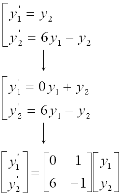

DE - Differential Equation vs Matrix Home : www.sharetechnote.com
Differential Equation meeting Matrix
As you may know, Matrix would be the tool which has been most widely studied and most widely used in engineering area. So if you can convert any mathemtical expressions into a matrix form, all of the sudden you would get the whole lots of the tools at once.
So it would be a very meaningful to ask following question :
i) Is it possible to convert a certain form of differential equation into a matrix form ?
ii) If the answer to question i) is YES, is it possible to convert ANY differential equations into a matrix form ?
iii) If the answer to question ii) is "Not ANY, but SOME", what kind of differential equations can be converted into Matrix form ?
The answer to the question i) is YES.
The answer to the question ii) is "NOT Always"
The answer to the question iii) is "Linear Homogeneous Differential Equations" or "Linear Non-Homogeneous Differential Equation". (Basically Matrix itself is a Linear Tools. That's why you learn it at "LINEAR Algebra course" -:)
Isn't there any way to use Matrix to solve Non Linear Homogeneous Differential Equation ? It is not possible as it is, but if you can convert the Non Linear Equations into a linear equation (Basically this is a approximation within a certain range of domain), it would be possible to use Matrix (I will explain on this 'linearization' process later in other section).
Let's look into the details of the process to convert a differential equation into a matrix form. As you would have learned in Matrix pages, you would need a set of simultaneous equations to construct a matrix. In this case, you would need a set of simultaneous differential equations to construct a matrix.
Let's suppose we have a set of simultaneous differential equations as follows. (This is a form of linear homogeneous simultaneous equations). For now, let's not think about the meaning of these equations.. let's just suppose it's given to us. (Note that y1, y2 here are function of x, it is not a value. It is a function which can be represented as y1(x), y2(x))
You can easily notice that this simultaneous equations can be converted into following matrix form.
You can simplify this representation even further as shown in the following process. At the end you would have very simple equation y' = A y. This simplified form would look very nice in mathematically, but it looks scary to a lot of readers if you don't know the detailed process of how these equations were derived).
Once you have a set of differential equations represented in Matrix form, you can use a lot of powerful Matrix tools to solve the problem. I will just write the final form of solutions of this form. The solution of this matrix equation is presented as follows. As you see, a special matrix analysis tool called "Eigenvalues" and "Eigenvectors" are used to describe the solution of the differential equation. Sometimes it would be pretty complicated to calculate Eigenvalues and Eigenvectors especially as the size of the matrix gets bigger and very large portions of your text book tend to get thicker because they try to explain a lot of this calculation process, but I would not explain anything about how to calculate "Eigenvalues" and "Eigenvectors" because you can easily get these values using Matlab, Octave, Mathematica etc and in reality almost nobody would calculate these values by hand). Important thing is to understand the mathematical expression as shown below. Even this, it would be a little difficult to have intuitive understanding without have some concrete examples, but I would add some examples later... for now at least try to understand the meaning of this form based on what you understand about Eigenvalues and Eigenvectors.

You may think this matrix form would not be useful in many case since there would not be many cases where we have a set of simultaneous equations. But it is not true. Actually this kind of simultaneous differential equations are very common. Sometimes it is given directly from modeling of a problem and sometimes we can get these simultaneous differential equations by converting high order (same or higher than 2nd order) differential equation into a multiple of the first order differential equations. Following is one example of this case.
Let's suppose we have a following 2nd order linear homogeneous differential equation.

You can get a set of simultaneous differential equation being made up of two first order linear homogeneous differential equations. I hope that following illustration would be explicit enough.

Once you have this multiple equations, you can easily convert it into a matrix forma as follows.

There is another type of linear differential equation which is linear non-homogenous differential equation. As I mentioned at the beginning of this section, it is also possible to convert this into a matrix form.
Let's assume that we have a set of simultaneous differential equation as follows.

You know that this set can be represented in Matrix form as follows.

You can simplify this even further by the following process. You don't need this simplification if you don't like, but it is good to know at least since many literature use this kind of simplified form.
The solution of this form can be expressed as follows. As you see, most part is exactly same as homogenous case. there is one additional term at the end.